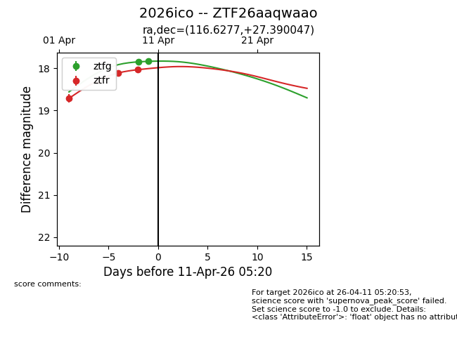
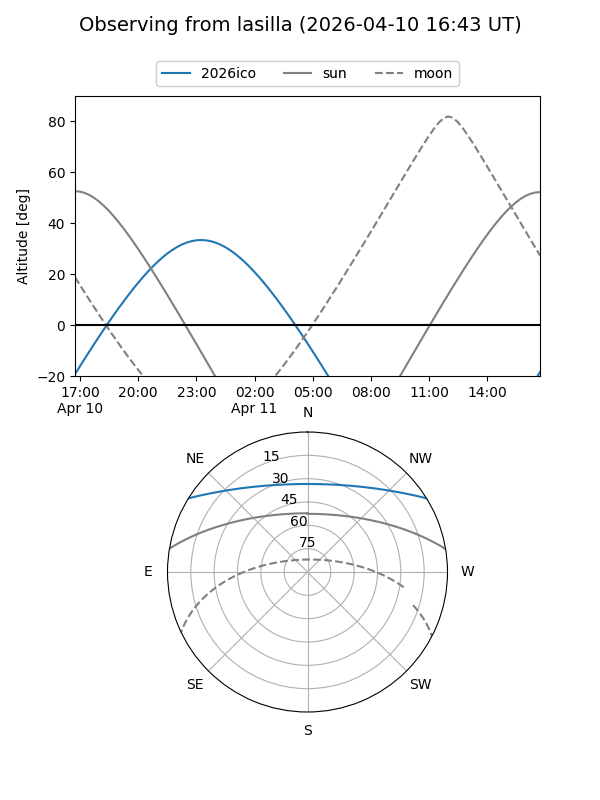
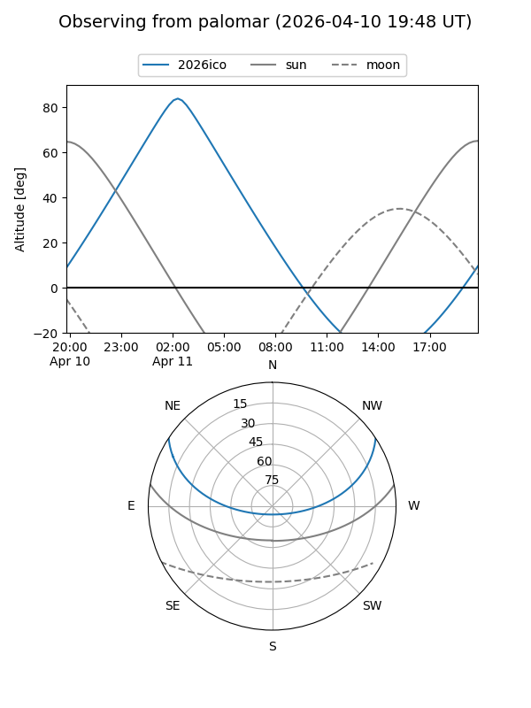
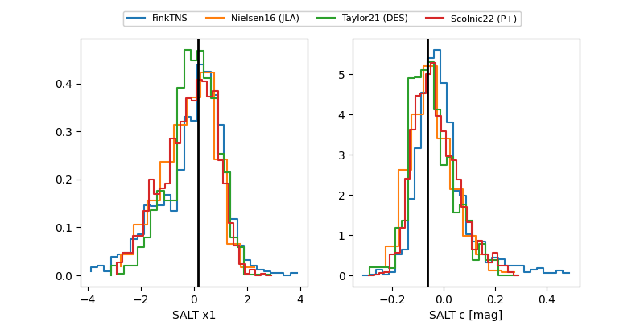

2026ico
Target 2026ico at 2026-04-11 05:29
Aliases and brokers:
FINK: link
Lasair: link
ALeRCE: link
TNS: link
YSE: link
alt names
ZTF26aaqwaao (ztf,fink_ztf)
2026ico (tns,yse)
Coordinates:
equatorial (ra, dec) = 116.6277,+27.39005
equatorial (HMS+DMS) = 07:46:30.65,+27:23:24.17
galactic (l, b) = (192.9790,+23.44325)
Flags:
Photometry:
last ztfg=17.84, ztfr=18.03
2 ztfg, 4 ztfr detections
Lightcurve

Visibility


Additional plots
